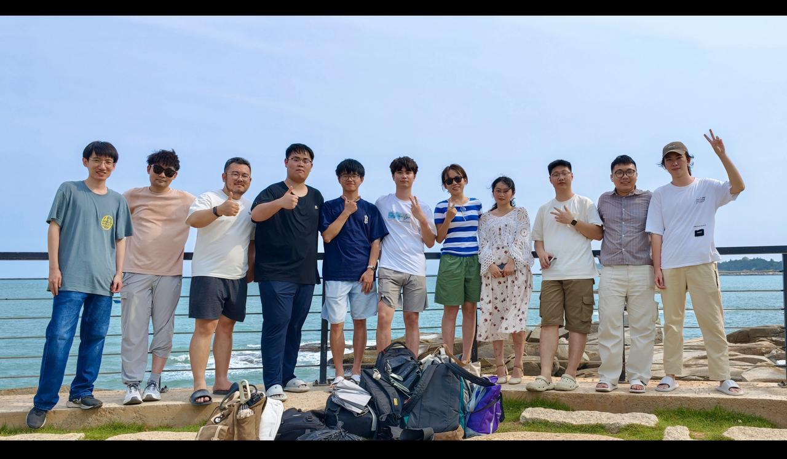
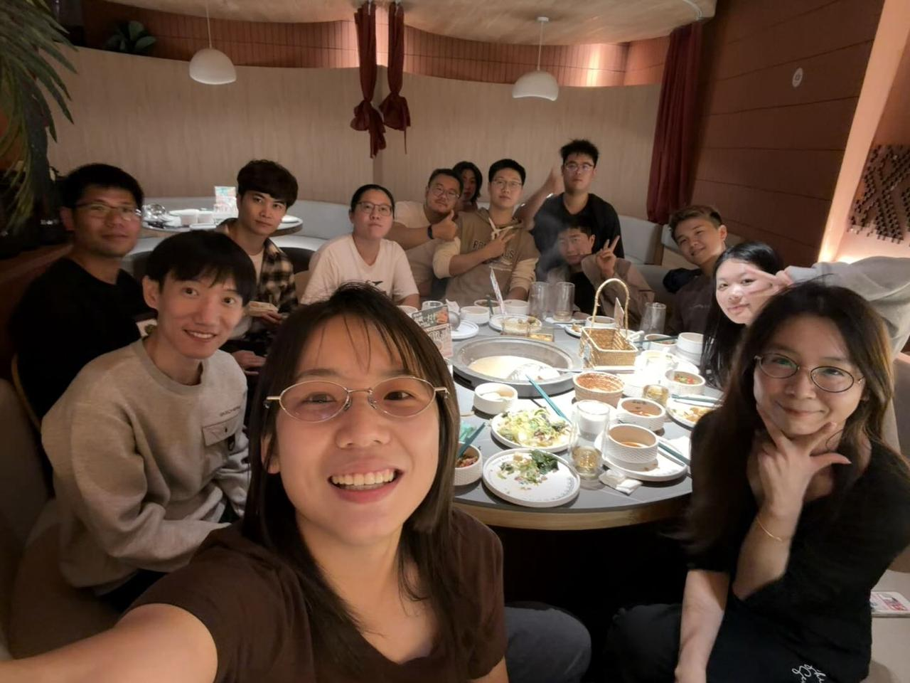
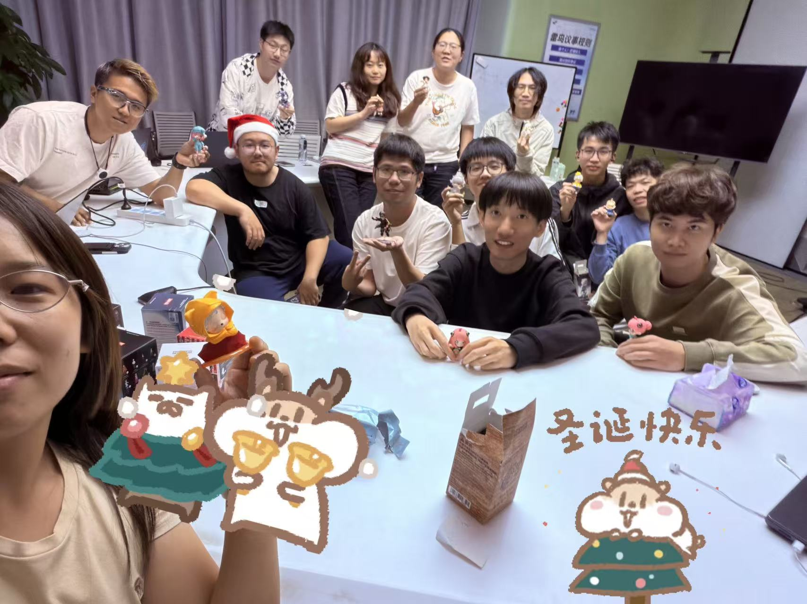

我是清华大学计算机系的二年级博士生，师从刘洋教授。此前于复旦大学获得硕士学位。
"第一视角基础模型 (Egocentric Foundation Model) 代表了下一代基础模型的发展方向。"
大模型算法部 实习生 (2025.01 - 至今)
负责人: 李宏伟 (CEO)
研究实习生 (2024)
导师: Lei Han
预训练组实习生 (2023-2024)
导师: 李先刚
投资实习生 (2023)
NLP组 (2022)
建立认知-落地-创新，全链路极速响应。
拥抱技术突破，第一时间调整航向。
互相成就，AI向善，改变世界。



我们的研究致力于弥合物理世界与数字智能之间的鸿沟。通过构建第一视角感知的多模态大模型，我们赋予智能眼镜“看懂世界”的能力；通过端侧高效训练与推理，我们确保智能触手可及且隐私安全；通过探索内隐知识，让 AI 具备类似人类的直觉与常识。
我们寻找对 AI、计算机视觉和 AR 充满热情的伙伴。
提供极具竞争力的薪酬、海量 GPU 算力支持以及与顶尖牛人共事的机会。
负责大模型能力搭建，AI算法落地，后端系统架构设计与开发，支撑高并发AI服务。
计算机硕士及以上；熟悉微服务架构(MySQL/Redis/Kafka/Docker)；精通Python/Java/Golang；有云开发及RAG/Agent落地经验。
负责ASR核心技术优化，模型迭代，解决唤醒、降噪问题；端侧语音交互全链路优化。
CS/EE硕士以上；熟练C++/Python；深入理解ASR(Conformer/Whisper)原理；熟悉PyTorch/TensorFlow。
研发音频AEC算法，满足回声消除指标；设计波束成形(Beamforming)算法；优化VAD。
精通信号处理；熟悉波束成形；精通Matlab/Python及C/C++移植；有嵌入式/DSP优化经验。
负责AR/AI眼镜音频链路设计；主导音频风险标定；统筹DSP/MCU资源分配。
消费类音频产品经验；精通AEC/Beamforming/VAD算法落地；熟悉高通/海思平台。
研发场景化记忆算法，提升个性化存储与检索；优化用户画像与交互体验；构建记忆数据链路。
CS/EE硕士以上；精通Python/PyTorch；有大模型微调、RAG、Agent-memory项目经验。
1. RAG/检索增强生成；2. 意图识别/NLP；3. AIGC/多模态。
硕士/博士在读；熟练Python；熟悉Transformers/LLM原理；有RAG/NLP/Agent经验；有顶会论文(ACL/CVPR等)优先。
持续优化ASR和TTS系统；跟踪前沿技术；负责云端服务架构与端侧算法优化；开发声纹识别。
CS/EE本科及以上；熟练C++/Python；深入理解ASR/TTS原理(Conformer/Whisper/FastSpeech)；熟悉TensorFlow/PyTorch。
开发AI Agent应用；针对研发部门设计AI Coding实施方案；筛选AI提效工具；解答工具使用问题。
本科及以上；了解LangGraph/AgentScope；熟悉Cursor/Claude等AI Coding工具；对AI工具有强烈兴趣。